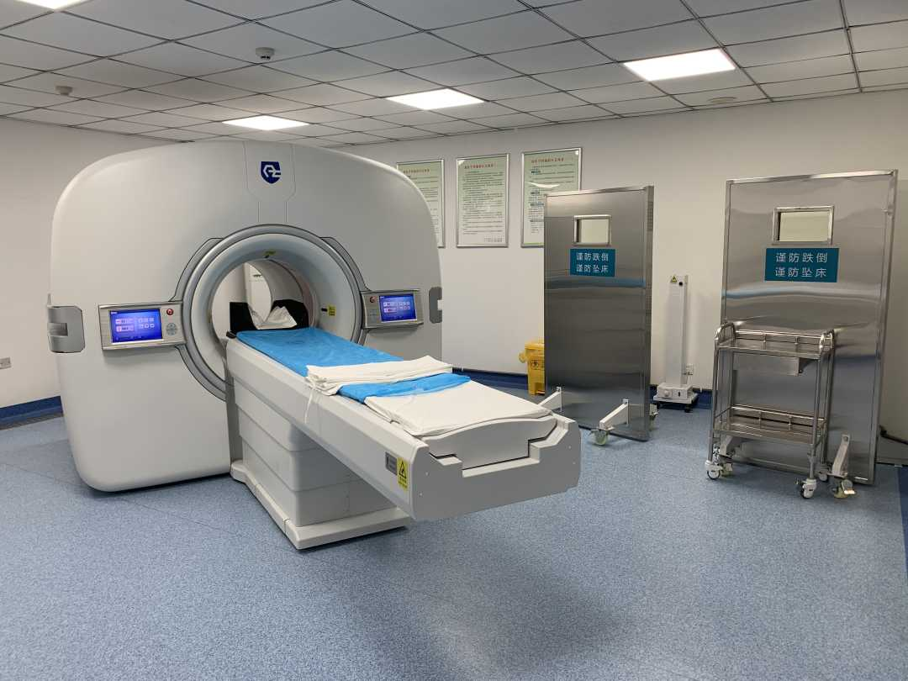

国产“癌症预警机”实现从0到1的艰难创新
4月6日，经济日报记者从华中科技大学获悉，由该校谢庆国团队发明的全球首款临床全数字PET／CT，2020年6月在湖北省鄂州市中心医院投入试运行。10个月以来，这台“火眼金睛”的“癌症预警机”为数百名患者提前“揪”出了癌症病灶，走完从研发成果到临床应用的艰难创新过程，实现了国产创新医疗器械从0到1的跨越式发展。
谢庆国团队“二十年磨一剑”、全球首创的全数字PET，在进入临床“实战”后，用一个个切切实实的临床案例，充分证明了这一全新技术路线的可行性，以及这一颠覆性创新科技的巨大潜力。
提前“揪”出癌症病灶
2020年5月，29岁的鄂州市中心医院护士王女士在例行体检中，查出肺部结节，因为没有任何不适症状，王女士起初并没有太在意。正好6月份时，临床全数字PET／CT设备在鄂州医院正式开始了试运行，想着刚刚装机，也不需要像其他医院预约一个PET检查还要排队，王女士就在临床医生的建议下去做了个PET检查。不查不知道，一查吓一跳，数字PET的成像图片显示，在王女士的右肺上，出现了一个比周边组织略亮的白影，而且形状不规则。
鄂州市中心医院核医学科主任焦次来介绍，人体内如果有肿瘤，会出现代谢旺盛的情况，恶性肿瘤比良性肿瘤代谢更旺盛。当一定量的示踪剂注入受检者体内后，在成像图片中，就会出现肿瘤病灶比周边组织更亮的现象。
“数字PET因为具有超高的生化灵敏度，可以发现代谢水平尚不高、病变程度还不严重的肿瘤病灶，患者肺部出现的白影亮度虽然不高，但足以说明这里已经发生了癌变。”焦次来当即建议王女士，赶紧进行对症治疗。在听取了焦医生的建议后，王女士及时进行了手术切除治疗，及时阻止了病灶进一步发生恶化与扩散。
焦次来介绍，自去年6月份试运行以来，这台设备已累计运行10个月。试运行之初，平均4天接待1位市民。随着口碑积累，现在，每天平均有5人进行PET／CT检查。许多长期往返鄂州、武汉，需要定期做复查的市民，都来鄂州市中心医院预约复查。“以往，鄂州市民做PET检查都要去外市，甚至去外省，现在，不仅鄂州本地市民，就连周边一些城市市民也专门到我们医院预约PET检查。这不，正好今天还接到两个黄石患者的检查预约，前几天还接到几个黄冈市民的预约。”焦次来说。
临床全数字PET产业化负责人张博介绍，在团队资源有限的情况下，目前这款产品还是第一代版本，采用了基本款的硬件配置，但已展示出全新技术的巨大潜力。预计今年年底将会推出第二代版本的设备，届时，做一次全身PET扫描仅需3分半钟。
焦次来认为，相比传统PET，数字PET设备最大的特点就是“好用”。“因为实现了数字化、模块化，所以特别好维护，如果有哪个地方出了问题，只需要拆下一个模块换上即可，不会像传统PET维护那样牵一发而动全身，往往要花很长时间和很大力气去维护。”
对于患者来说，最直观的感受则是又快又准的检查体验。如果受检者不小心在检查床上移动造成了图像的伪影，或突然发生检查中断的意外情况，数字PET都不需要重新扫描，而是通过图像处理软件就可以及时校正。在降低辐射剂量的同时，实现又快又准地查出结果。

数字PET从0到1的突破
PET因研发门槛极高，此前只有极少数西方国家掌握了PET研发技术，PET的数字化工程更是被誉为医疗装备产业界的“两弹一星”。谢庆国团队通过发明的MVT方法，解决了PET信号源头的数字化国际难题，实现了全球数字PET研发领域的原创与领先。
2018年国家卫健委发布的PET/CT配置规划显示，到2020年底，全国PET/CT配置规划一共达到710台。相关统计显示，2016年美国每百万人口数量5.13台，澳大利亚3.07台，中国每百万人口还不到0.2台。我国拥有全世界最大的肿瘤人群数量，平均1分钟就有7个人被诊断为癌症。世界卫生组织调查显示，三分之一的癌症完全可以通过早期发现得到根治。
数字PET团队骨干成员、华中科技大学教授肖鹏介绍，“作为癌症早期诊断的利器，PET市场潜力巨大。目前来看，PET在中国的装机量还远远无法满足民众健康需求，现在基本上还是一二线城市的三甲医院才会提供PET检查服务。”
鄂州市中心医院党委书记、院长刘黎明认为，鄂州作为湖北面积最小的地级市，能够迎来全球首台临床全数字PET设备在当地装机，“小”城市迎来“大”设备，将大大提升鄂州市的肿瘤检测技术水平，对鄂州医疗资源也是一个强有力的补充与壮大。
“目前，我们在鄂州已经完成了数字PET从0到1的研发与应用突破，接下来，数字PET要尽快实现大规模、高质量的应用，尽快驶入从1到N的发展‘快车道’。我们也期待能够涌现出更多像鄂州一样的地方政府，大家一起把数字PET这个利国利民的大国健康重器推向这个‘快车道’。”数字PET发明人、华中科技大学教授谢庆国充满期待。（经济日报经点科学工作室 记者:柳洁）